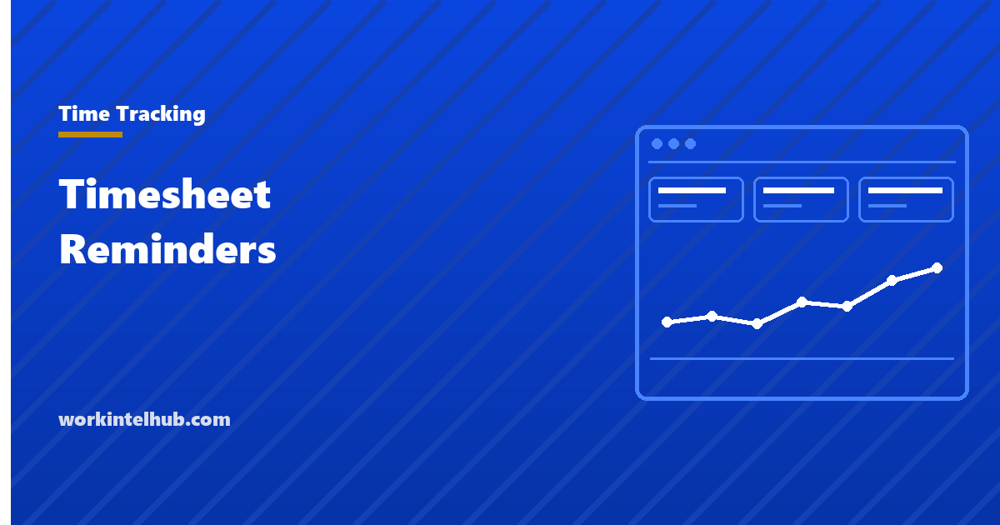

Timesheet Reminders

Reminder wording is at the bottom of this page. It is at the bottom deliberately, because a reminder is the cheapest possible fix and it is rarely the reason timesheets are late.
Late timesheets almost always have a structural cause: the deadline is at a bad time, the form takes too long, nothing happens when it is missed, or nobody knows what the data is used for. Fix those and the reminder becomes a courtesy rather than a chase.
Why timesheets come in late
Five causes cover almost all of it, and the right fix is different for each.
| Cause | What it looks like | Fix |
|---|---|---|
| Bad deadline | Due Friday at 5pm, or Monday morning | Move it to Friday midday or Monday afternoon |
| Too slow to fill in | Reconstructing the week from memory | Fewer fields, or daily entry |
| No consequence | Payroll chases and it still gets paid | Name what actually happens, once |
| No visible purpose | Nobody knows where it goes | Show what it is used for |
| Broken tooling | Login expires, mobile does not work | Fix the tool, not the person |
The deadline one is the most common and the easiest to test. A Friday 5pm deadline competes with everything else that has to be finished on Friday and lands after many people have stopped for the week. Moving it to Friday midday routinely improves on-time submission more than any reminder does, because it is asking at a moment people are still at their desks.
When to send them
Three sends. More than that and people learn to ignore all of them, which is the specific failure mode of reminder-heavy systems.
- Advance, on the last working day of the period. Ahead of the deadline, while there is still time to act.
- On the deadline, to the people who have not submitted. Not to everyone. Reminding people who already complied is how a reminder becomes background noise.
- After the deadline, to the manager. Once, with names. Not a public list.
Segmenting the second send matters more than the wording. If a reminder reaches people who have already done the thing, they stop reading it, and then it stops working for the people who have not.
Consider also what you are adding to. Microsoft Work Trend Index reported in June 2025 that knowledge workers are interrupted roughly every two minutes across meetings, email and chat. A reminder is an interruption too, and one aimed at the wrong people is a pure cost.
Measure the submission rate, not the reminders sent
If chasing timesheets is a recurring cost, it is worth a number. One is enough.
On-time submission rate is the share of expected timesheets received before the deadline, per period. Track it by team rather than by person, because the pattern is almost always a team-level one: a particular manager, a particular shift pattern, a particular client whose work runs late into Friday.
On-time rate: =submitted_before_deadline / expected_submissions
Chase load: =reminders_sent_after_deadline / expected_submissions
Correction rate: =sheets_amended_after_approval / submitted
The third one is the useful surprise. A team with a high on-time rate and a high correction rate is submitting fast and wrong, which is worse for payroll than submitting late, and a reminder-only view of the problem never surfaces it.
Two cautions about how you use these. Do not publish a league table of individuals; it changes the behaviour without changing the cause, and people start submitting placeholder hours to clear the deadline. And do not set a target of 100%%. The last few percent are usually people on leave, on shift, or genuinely blocked, and pursuing them costs more than the hours are worth.
Copy-paste reminder wording
Three messages, matching the three sends. Keep the deadline, the link and the reason in every one, and keep them short enough to read in the notification preview.
Timesheets for [period] are due [day and time]. It takes about two minutes: [link]
Submitting on time is what lets payroll run on [payday].
Subject: Timesheet due today, [date]
Hi [name], your timesheet for [period] has not come through yet. It closes at [time] today.
Submit here: [link]
If something is blocking it, reply to this and we will sort it out rather than you having to work around it.
Subject: Outstanding timesheets, [period]
These have not been submitted for the period ending [date]: [names]
Payroll closes [date and time]. After that, corrections move to the following cycle.
Note what is absent. No exclamation marks, no "friendly reminder", no third and fourth chase. The last line of the deadline message is the one that does the most work, because it turns a chase into an offer and surfaces the tooling problems you would otherwise never hear about.
What happens when it is still late
This is the part most policies avoid, and avoiding it is why the reminders never stop.
Be careful about the obvious lever. Withholding pay for a missing timesheet is not available to you: under the FLSA an employer must pay for all hours worked on the regular payday whether or not the timesheet arrived. The record keeping duty in 29 CFR 516.2 is the employer's, not the employee's. A missing timesheet means you have to establish the hours some other way, not that you can decline to pay.
What is available is ordinary management. Say once what happens when a timesheet is late, in the same plain terms as the rest of the policy: the hours are estimated from the schedule, payroll corrects in the next cycle, and repeated lateness is a performance conversation rather than an escalating email sequence. Then hold to it.
Where the sheet is late because the person genuinely does not remember the week, the fix is upstream. Daily entry takes less total time than weekly reconstruction and produces better data, and it is the single change most likely to end the chasing.
Automate the chase before you write more of it
A reminder is a scheduled message conditional on a missing record. That is a job for software. If you are sending them by hand, that is the thing to fix first, because manual reminders are also the ones that go to everybody rather than only to the people who need them.
Most time tracking tools do this natively. If yours does not, a scheduled script against the submission list is a short piece of work, and it removes the part of the job that made anyone resent it. Our page on timesheet automation covers what to automate in what order, and the timesheet template covers the form itself.
Key takeaways
- Late timesheets usually have a structural cause. A reminder is the cheapest fix and rarely the right one.
- Moving a Friday 5pm deadline to Friday midday improves on-time submission more than any reminder wording.
- Send three: advance to everyone, deadline day to unsubmitted only, after the deadline to the manager.
- Never remind people who have already submitted. That is how a reminder becomes background noise.
- You cannot withhold pay for a missing timesheet. The FLSA record keeping duty is the employer's.
- Say once what happens when a sheet is late, then hold to it, instead of escalating the email sequence.
- Daily entry takes less total time than weekly reconstruction and is the change most likely to end the chasing.
- Track on-time submission by team, and watch the correction rate: fast and wrong is worse for payroll than late.
Frequently asked questions
How do I get employees to submit timesheets on time?
Change the deadline before you change the reminder. A Friday 5pm deadline competes with everything else due that day and lands after many people have stopped. Friday midday or Monday afternoon typically works better. After that, reduce the number of fields and remind only the people who have not submitted.
Can I withhold pay if an employee does not submit a timesheet?
No. Under the FLSA an employer must pay for all hours worked on the regular payday regardless of whether a timesheet was submitted, and the record keeping duty in 29 CFR 516.2 belongs to the employer. A missing timesheet means you must establish the hours another way, not that payment can be delayed.
How many timesheet reminders should I send?
Three at most: one in advance to everyone, one on the deadline to people who have not submitted, and one after the deadline to the manager. Beyond that people learn to ignore all of them, and the reminders stop working for the few who genuinely need them.
Should timesheet reminders go to the whole team?
Only the advance one. The deadline reminder should go to people who have not submitted. Reminding someone who already complied trains them to ignore the message, which then degrades the reminder for everyone else.
What should a timesheet reminder say?
The period, the deadline, the link, and one line on why it matters. Add an invitation to reply if something is blocking it, which turns the chase into an offer and surfaces tooling problems you would otherwise never hear about.
Is daily or weekly timesheet entry better?
Daily, in most cases. It takes less total time than reconstructing a week from memory and it produces more accurate data, because the entries are made while the person still remembers what they did. Weekly reconstruction is a common reason sheets are both late and approximate.
How do I measure whether timesheet chasing is improving?
Track on-time submission rate by team, the number of reminders sent after the deadline, and the share of sheets amended after approval. The third is the one people miss: a team that submits on time but is corrected often is submitting fast and wrong, which costs payroll more than lateness does.
What is a reasonable timesheet deadline?
Late morning on the last working day of the period, or early afternoon on the first day of the next one. Both land at moments people are at their desks and not already closing down, which matters more than how much notice you give.